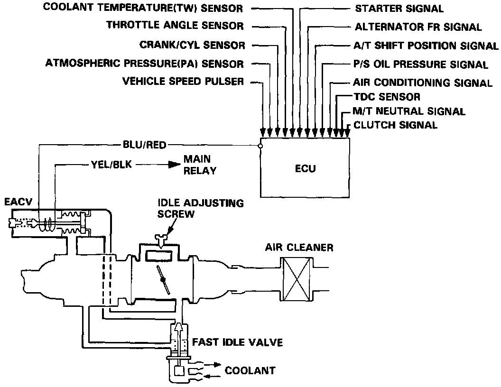
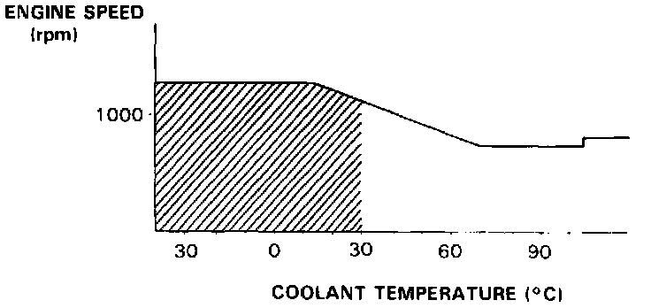

Idle Control System

System Description
The idle speed of the engine is controlled by the Electronic Air Control Valve (EACV) and the Fast Idle Valve.
The Electronic Air Control Valve changes the amount of air bypassing into the intake manifold in response to electric current sent from the ECU. When the EACV is activated, the valve opens to maintain the proper idle speed.

Operation
1. After the engine starts, the EACV opens for a certain time. The amount of air is increased to raise the idle speed about 150-250 rpm.
2. When the coolant temperature is low, EACV, is opened to obtain the proper fast idle speed. The amount of bypassed air is thus controlled in relation to the coolant temperature.
When the coolant temperature is below 30°C (86°F), the fast idle valve is open to prevent the idle speed from dropping.